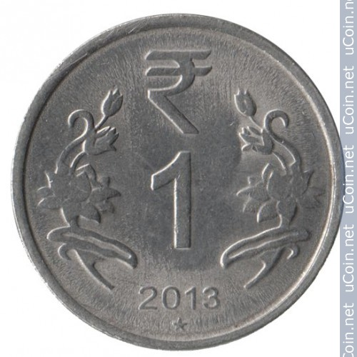

Is it possible to toss a coin in a way that biases it toward heads or tails? Perhaps. Here is a sequence of actual coin tosses:
The sequence preserved in the original post contains 73 visible outcomes, of which 51 landed tails-up—about 70 percent. My accompanying text in 2015 described 75 tosses and 52 tails, but I no longer have enough information to reconcile that discrepancy. Using the visible sequence, if the tosses were independent and the coin had an equal chance of landing on either side, the probability of observing at least 51 tails would be approximately 0.00046. How did I produce such an imbalance?
Tossing method

For every toss, I began with tails facing up, threw the coin high with a strong spin, and caught it with a sharp slap between my palms. The coin was a 2012 Indian one-rupee coin.
To reduce confirmation bias, I decided whether to accept each toss before looking at the result. A toss counted only if I believed I had followed the method correctly; that judgment could not depend on whether the outcome supported my hypothesis.
Reversing the starting side
To test whether the starting orientation mattered, I repeated the experiment with the same coin, this time beginning every toss with heads facing up. The results of 50 tosses were:
Thirty-three tosses landed heads-up and 17 landed tails-up. Under the same fair-and-independent model, the one-sided probability of observing at least 33 heads in 50 tosses is approximately 0.016.
Trying a different coin
I next repeated the experiment with a larger RBI platinum-jubilee two-rupee coin, again beginning with tails facing up:
Once again, 33 of 50 tosses landed on the favored side. The corresponding one-sided probability is approximately 0.016. This suggested that the effect might not be unique to the smaller coin, although two coins are far too few to establish that conclusion.
A more ordinary toss
Finally, I checked whether the unusual tossing technique itself mattered. I tossed the coin more normally, without controlling the height or spin and without catching it with a slap. I started each toss with heads facing up and simply let the coin land on one palm:
Of these 75 tosses, 36 landed heads-up and 39 landed tails-up—an unremarkable result for a fair coin.
My experience suggested that the height, spin, and sharp catch were all important. A more rigorous experiment would vary these conditions one at a time, randomize the starting side, use several coins, and have someone else record or perform the tosses. At the time, however, my palm was sore enough.
If the visible sequences from the first three experiments are pooled, 117 of 173 tosses landed on the side that began facing up. A straightforward one-sided binomial calculation gives a probability of about 2.0 × 10−6 under the fair-and-independent model. That calculation does not account for every choice made while developing the procedure, which is one reason an independent replication matters.
Preliminary conclusion: When I tossed a coin high with a strong spin and caught it with a sharp slap, it was more likely to land on the same side that faced up at the start.
Experimental history offers plenty of reasons for caution. Measurements can be influenced by accepted results, choices about which observations to retain, and procedures refined while data are being collected. I tried to avoid the most obvious version of that problem by accepting or rejecting each toss before seeing its outcome. Replication would be the stronger test.